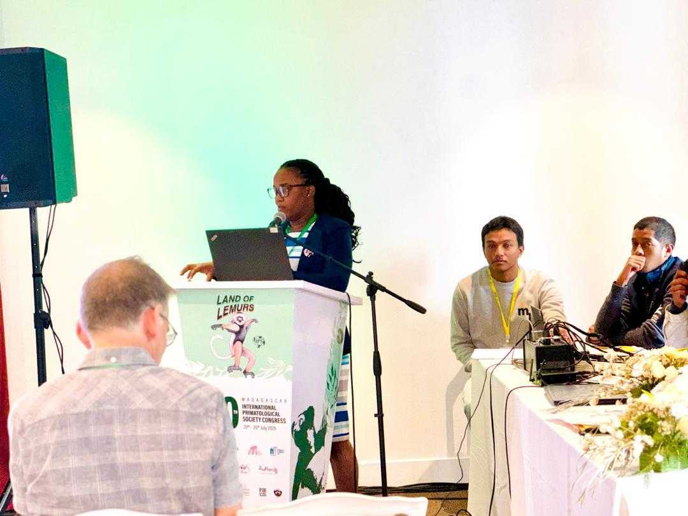
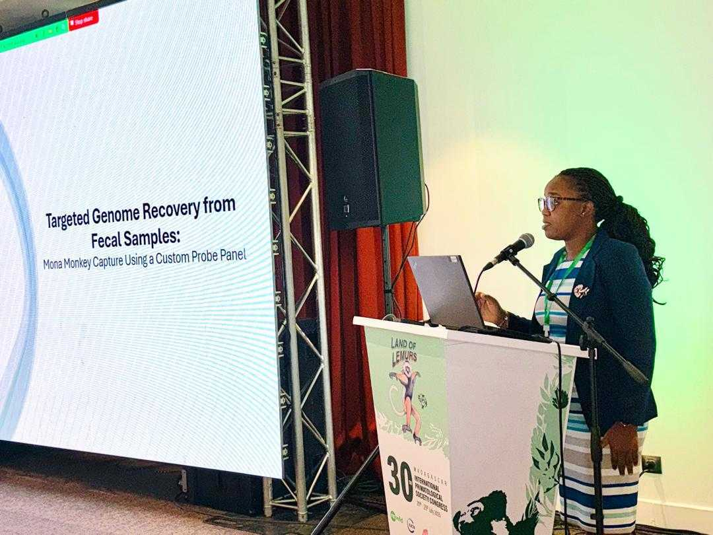
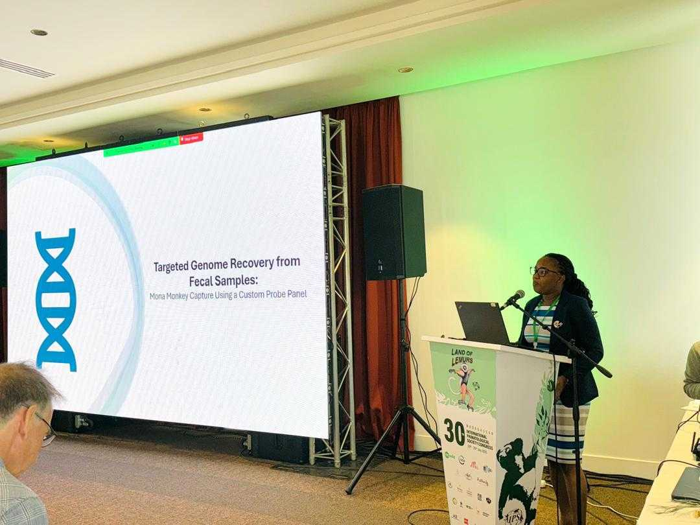
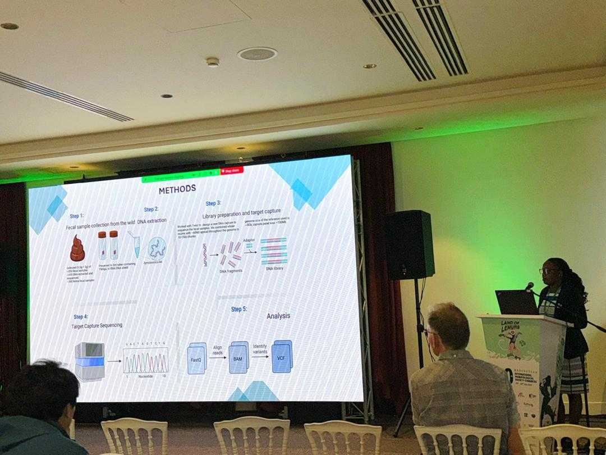
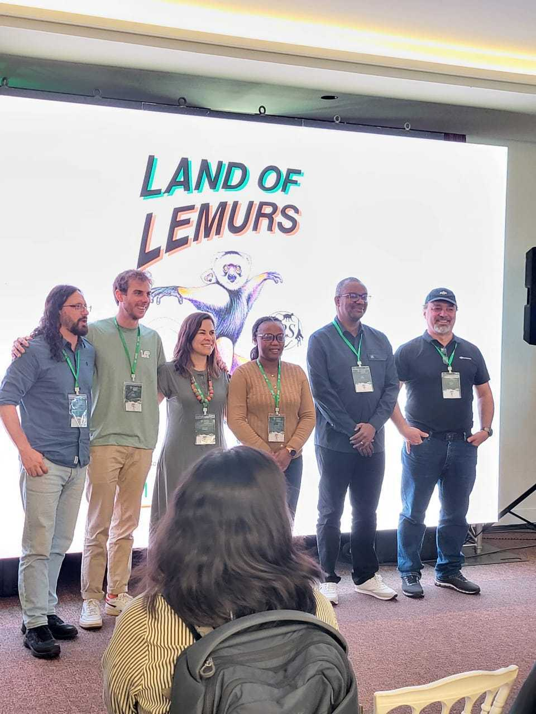
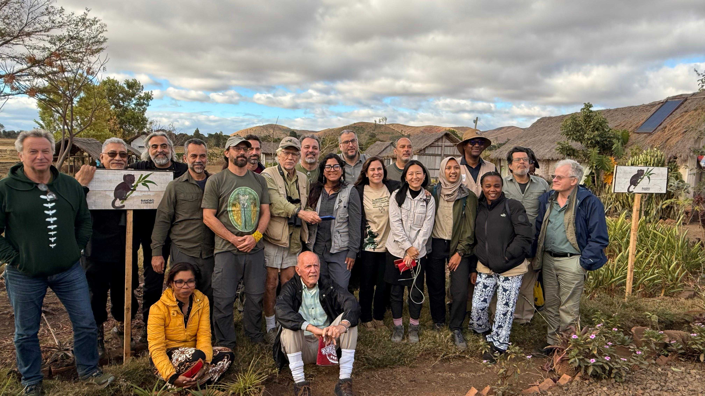
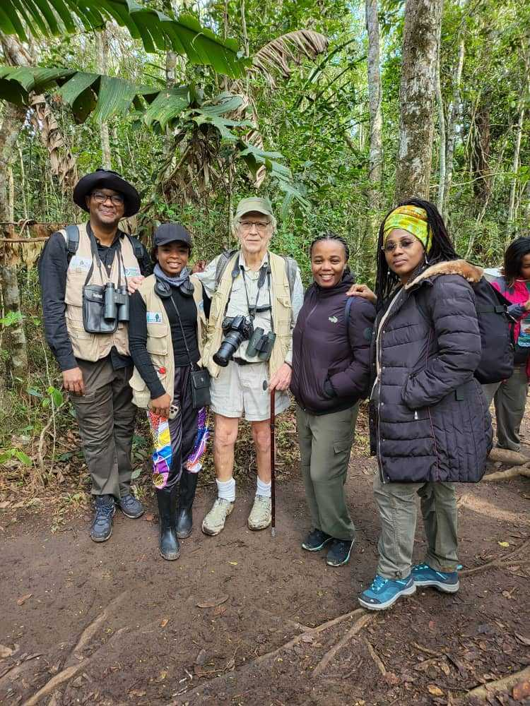
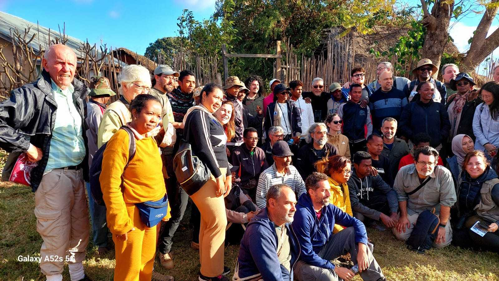

Computational Genomics & Population Genetics Scientist
I build production-grade NGS pipelines and multi-omics analytical frameworks that translate raw sequencing data into mechanistic biological insight — across human populations, nonhuman primate models, and infectious disease systems. My work sits at the intersection of computational genomics, population genetics, and translational research.
I am a Computational Genomics and Population Genetics Scientist with a Ph.D. in Genetics and more than 8 years of end-to-end experience building NGS pipelines, multi-omics frameworks, and AI/ML-driven analytical systems across academic medicine, international research institutes, and public health programs in the US, China, and West Africa.
My technical core is production-grade genomic data science. I design and deploy reproducible NGS pipelines — from DNA extraction and sequencing through variant calling (GATK, ANGSD, BCFtools), VCF curation, LD pruning, PCA, and population structure analysis — on HPC systems (SLURM/Duke Computing Cluster/Hoffman2) and cloud platforms (AWS, Google Cloud). I work in R and Python daily, building scalable workflows that have processed population-scale datasets across hundreds to thousands of samples with rigorous QC and reproducibility standards.
Few computational genomics scientists have spent equal time at the bench, in the field, and inside HPC pipelines. That cross-layer fluency — from biological sample to population-scale inference, is what I bring to every team I work with.
I integrate machine learning-based genomic selection scans, ecological modeling, and multi-omics data, spanning whole-genome, transcriptomic, and epigenomic layers, to generate mechanistic insights that connect molecular variation to disease outcomes. My work in host-pathogen genomics and infectious disease, particularly in NHP and human populations under malaria and SIV pressure, sits directly at the intersection of population genetics and translational research, the same scientific questions driving infectious disease, immunogenomics, and precision medicine today.
I have secured $161,976 in extramural funding as PI and co-PI, published 28 peer-reviewed papers including 9 as first or corresponding author, and led research teams across three continents. I bring the independent scientific judgment of a funded PI with the pipeline engineering fluency — Snakemake, GATK, cloud HPC, production-scale R and Python, that teams can put to work immediately.
With particular interest in infectious disease genomics, population genetics, and translational multi-omics, I welcome collaborations and conversations at the intersection of computational biology, bioinformatics, and real-world biological impact.
Each program combines in vivo NHP research, in vitro systems, in silico computational approaches, and environmental NAMs — producing the mechanistic rigor and translational breadth relevant to biopharma, federal biomedical research, and academic medicine.
Whole-genome sequencing, demographic modeling, selection scans, and admixture inference applied to human and nonhuman primate populations across African landscapes — including signatures of malaria resistance, immune adaptation, and pigmentation variation along environmental gradients.
Host-pathogen genomics, zoonotic disease dynamics, and noninvasive eDNA/iDNA surveillance methods — including Oxford Nanopore field sequencing deployed in zoonotic-risk landscapes. Investigations of malaria, SIV, and co-infection dynamics in NHP and human populations.
Integration of machine learning-based genomic selection scans, multi-omics frameworks (whole-genome, transcriptomic, epigenomic), and ecological modeling to generate mechanistic insights connecting molecular variation to disease outcomes at population and systems scale.
Eight-plus years of training across wet-lab, computational, and field-based research — in laboratories in China, Nigeria, Côte d'Ivoire, Germany, and the United States.
Lead and co-author on 28+ papers in Molecular Biology and Evolution, Scientific Reports, Frontiers in Genetics, Ecological Indicators, and more. Full list on Google Scholar ↗.
Principal investigator and co-applicant on $161,976 in competitive extramural funding from the National Geographic Society, Fonseca Species Conservation Fund, and the Rufford Foundation.
Platform presentations and invited talks at SMBE, the International Primatological Society, the African Primatological Society Congress, the American Society of Primatologists, and the Carolina Malaria Research Annual Symposium.





30th International Primatological Society Congress · Madagascar, July 2025 · Presenting "Targeted Genome Recovery from Fecal Samples: Mona Monkey Capture Using a Custom Probe Panel"
Alongside research, I run conservation education and zoonotic disease awareness programs, train park rangers in biodiversity monitoring and eDNA sampling, and mentor early-career scientists across the US, Nigeria, Ghana, Togo, and Côte d'Ivoire.



Field research, international collaboration, and capacity-building across West Africa, Madagascar, and beyond — connecting computational genomics to in-situ biological systems.
Fellowships, scholarships, and awards received between 2007 and 2020.
Alongside research, I run conservation education programs, train park rangers, and mentor early-career scientists across USA, Nigeria Ghana, Togo, and Côte d'Ivoire.
With particular interest in infectious disease genomics, population genetics, clinical research and translational multi-omics, I welcome collaborations and conversations at the intersection of computational biology, bioinformatics, and real-world biological impact.
If you are building a genomics team that demands both rigorous computational and translational depth, let's connect. I am open to industry, biotech, federal, and academic opportunities across RTP, Boston/Cambridge, Bay Area, and remote-first organizations.
US Permanent Resident, no sponsorship required.